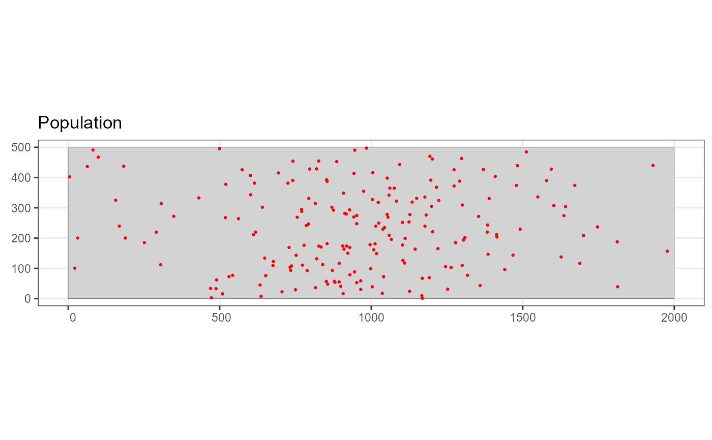
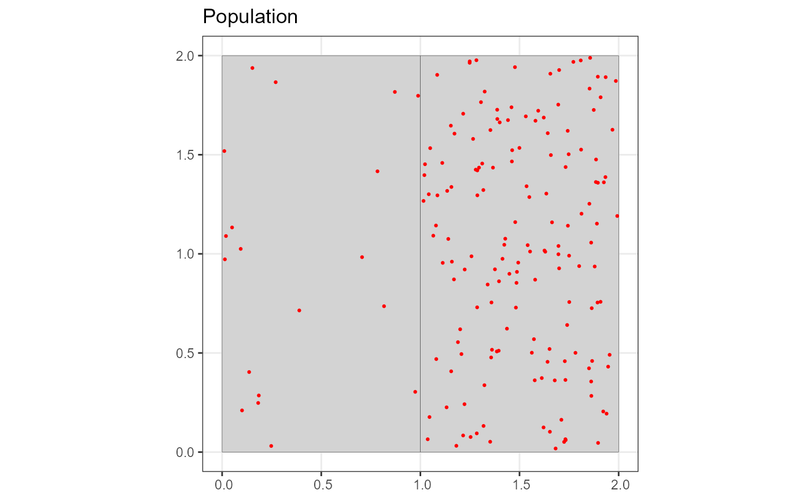

Creates a Population.Description object
Source:R/ClassConstructors.R
make.population.description.RdCreates an object which describes a population. The values in this object will be used to create instances of the population.
Usage
make.population.description(
region = make.region(),
density = make.density(),
covariates = list(),
N = numeric(0),
fixed.N = TRUE
)Arguments
- region
the Region object in which this population exists (see make.region).
- density
the Density object describing the distribution of the individuals / clusters (see make.density).
- covariates
Named list with one named entry per individual-level covariate. Cluster sizes can be defined here, it must be named 'size'. The distribution of covariate values can either be defined by specifying a particular distribution and its parameters or as a discrete distribution in a dataframe. Dataframes should have columns level and prob (and optionally strata) specifying the covariates levels, probabilities and strata if they are strata specific. Distributions can be defined as lists with named entries distribution and the relevant parameters as specified in details. A list of distributions can be provided with one for each strata.
- N
the number of individuals / clusters in a population with one value per strata. Total population size is 1000 by default.
- fixed.N
a logical value. If TRUE the population is generated from the value(s) of N otherwise it is generated from the values in the density grid.
Details
Individual-level covariate values can be defined as one of the following distributions: 'normal', 'poisson', 'ztruncpois' or 'lognormal'. The distribution name and the associated parameters as defined in the table below must be provided in a named list. Either one list can be provided for the entire study area or multiple lists grouped together as a list with one per strata.
| Distribution | Parameters | |
| normal | mean | sd |
| poisson | lambda | |
| ztruncpois | mean | |
| lognormal | meanlog | sdlog |
Examples
# Create a basic rectangular study area
region <- make.region()
# Make a density grid (large spacing for speed)
density <- make.density(region = region,
x.space = 200,
y.space = 100,
constant = 1)
density <- add.hotspot(density, centre = c(1000, 100), sigma = 250, amplitude = 10)
# Define some covariate values for out population
covs <- list()
covs$size <- list(distribution = "ztruncpois", mean = 5)
# Define the population description
popdsc <- make.population.description(region = region,
density = density,
covariates = covs,
N = 200)
# define the detecability
detect <- make.detectability(key.function = "hn", scale.param = 25, truncation = 50)
# generate an example population
pop <- generate.population(popdsc, region = region, detectability = detect)
plot(pop, region)

# Multi-strata example (make sf shape)
s1 = matrix(c(0,0,0,2,1,2,1,0,0,0),ncol=2, byrow=TRUE)
s2 = matrix(c(1,0,1,2,2,2,2,0,1,0),ncol=2, byrow=TRUE)
pol1 = sf::st_polygon(list(s1))
pol2 = sf::st_polygon(list(s2))
sfc <- sf::st_sfc(pol1,pol2)
strata.names <- c("low", "high")
sf.pol <- sf::st_sf(strata = strata.names, geom = sfc)
region <- make.region(region.name = "Multi-strata Eg",
strata.name = strata.names,
shape = sf.pol)
# \donttest{
density <- make.density(region = region,
x.space = 0.22,
constant = c(10,80))
covs <- list()
covs$size <- list(list(distribution = "poisson", lambda = 25),
list(distribution = "poisson", lambda = 15))
covs$sex <- data.frame(level = rep(c("male", "female"),2),
prob = c(0.5, 0.5, 0.6, 0.4),
strata = c(rep("low",2),rep("high",2)))
# Define the population description (this time using the density to determine
# the population size)
popdesc <- make.population.description(region = region,
density = density,
covariates = covs,
fixed.N = FALSE)
# define the detecability (see make.detectability to alter detection function
# for different covariate values)
detect <- make.detectability(key.function = "hn", scale.param = 25, truncation = 50)
# generate an example population
pop <- generate.population(popdesc, region = region, detectability = detect)
plot(pop, region)

# }